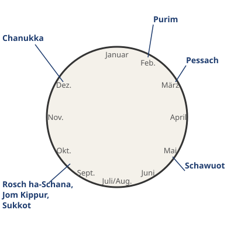
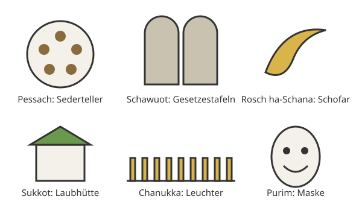

Die Feste im Jahreskreis
Mit einem KI-Tutor lernen
Ein KI-Tutor erklärt dir diese Seite und hilft dir bei den Übungen. Wähl deinen Assistenten:
Mit Claude öffnen Mit ChatGPT öffnen Mit Mistral Vibe öffnen
Du nutzt dein eigenes Konto beim Anbieter. Der Assistent ist kein Angebot von lernapps.net: lernapps liefert nur Inhalte und Übungen. Die Wahl gilt für alle Seiten, nur auf diesem Gerät.
Überblick
Das jüdische Jahr hat viele Feste und Gedenktage. Jedes Fest erinnert an etwas aus der Geschichte des Volkes oder aus der Bibel. Zu jedem gehören bestimmte Bräuche. Der jüdische Kalender hat eigene Monate. Darum liegen die Feste in unserem Kalender mal früher, mal später. Hier stehen sie so, wie sie ungefähr im Jahr aufeinanderfolgen.
Die Feste im Überblick

Die Feste im Kalenderjahr. Schau dir an, welche Feste im Herbst liegen.
Quelle: eigene Zeichnung. Lizenz: CC-BY-4.0.| Fest und Datum | Bedeutung und Brauch |
|---|---|
| Pessach, 15. bis 22. Nisan | Befreiung aus Ägypten. Ungesäuertes Brot (Mazzen) essen, Sederteller, die Geschichte vom Auszug vorlesen. |
| Schawuot, 6. bis 7. Siwan | Wochenfest, Erinnerung an die Zehn Gebote, Erntefest. Milchspeisen und Honig essen. |
| Rosch ha-Schana, 1. bis 2. Tischri | Neujahrsfest. Das Schofar blasen. |
| Jom Kippur, 10. Tischri | Versöhnungstag. Fasten, am Ende das Schofar blasen. |
| Sukkot, 15. bis 22. Tischri | Laubhüttenfest, Erinnerung an die Wüstenwanderung. Eine Laubhütte bauen. |
| Chanukka, 25. Kislew bis 2. oder 3. Tewet | Weihefest, Wiedereinweihung des Tempels. Jeden Tag eine Kerze mehr anzünden. |
| Purim, 14. oder 15. Adar | Losfest, Rettung des Volkes im Persischen Reich. Sich verkleiden, Süßigkeiten essen. |

Jedes Fest hat ein Symbol, das du dir merken kannst.
Quelle: eigene Zeichnung. Lizenz: CC-BY-4.0.Info
Sukkot dauert bis zum 22. Tischri. Manche zählen den 23. Tischri dazu, den Tag der Torafreude (Simchat Tora). Dann sind es 15. bis 23. Tischri.
Übung
Übung
Lösung
Richtige Antwort: Pessach – Befreiung aus Ägypten; Schawuot – Erinnerung an die Zehn Gebote; Rosch ha-Schana – Neujahrsfest; Jom Kippur – Versöhnungstag; Sukkot – Erinnerung an die Wüstenwanderung; Chanukka – Wiedereinweihung des Tempels; Purim – Rettung im Persischen Reich
Jedes Fest erinnert an ein Ereignis. Pessach an den Auszug, Schawuot an die Gebote, Sukkot an die Wüste, Chanukka an den Tempel und Purim an die Rettung im Buch Ester.
Mehr dazu:
Übung
Lösung
Richtige Antwort: Pessach – Ungesäuertes Brot essen; Schawuot – Milchspeisen und Honig essen; Jom Kippur – Fasten; Sukkot – Eine Laubhütte bauen; Chanukka – Kerzen am Leuchter anzünden; Purim – Sich verkleiden
Die Bräuche erinnern an das Ereignis des Festes. Die Laubhütte erinnert zum Beispiel an die Zeit in der Wüste.
Mehr dazu:
Übung
Lösung
Richtige Antwort: 1. Purim, 2. Pessach, 3. Schawuot, 4. Rosch ha-Schana, 5. Jom Kippur, 6. Sukkot, 7. Chanukka
Purim liegt im Februar oder März und Pessach im März oder April. Es folgen Schawuot im Mai oder Juni, die Herbstfeste und zuletzt Chanukka.
Mehr dazu:
Offene Aufgabe
Suche dir ein Fest aus und arbeite heraus, welches Bild von Gott im Vordergrund steht. Vergleiche mit einem christlichen Fest. Schreibe vier bis sechs Sätze.
Eine gute Antwort enthält:
Lösung
Pessach: Gott befreit sein Volk aus der Sklaverei, Gott ist der Befreier. Ostern: Christen feiern, dass Jesus nach seinem Tod auferstanden ist. Gemeinsam ist beiden: Gott rettet und führt in ein neues Leben.
Offene Aufgabe
Nenne ein Fest, das du selbst jedes Jahr feierst und das zurückschaut. Auf welches Ereignis blickt es zurück? Schreibe zwei bis drei Sätze.
Eine gute Antwort enthält:
- Ein Fest ist genannt, das du selbst feierst. (Form)
- Das Ereignis, auf das es zurückblickt, ist genannt. (Form)
- Jüdische Feste erinnern ebenfalls an Ereignisse, zum Beispiel Pessach an den Auszug aus Ägypten. Nachlesen
Lösung
Zum Beispiel Weihnachten. Es blickt auf die Geburt Jesu zurück. Oder dein eigener Geburtstag, der zurückblickt auf den Tag, an dem du geboren wurdest. Auch jüdische Feste blicken zurück: Pessach auf den Auszug aus Ägypten.